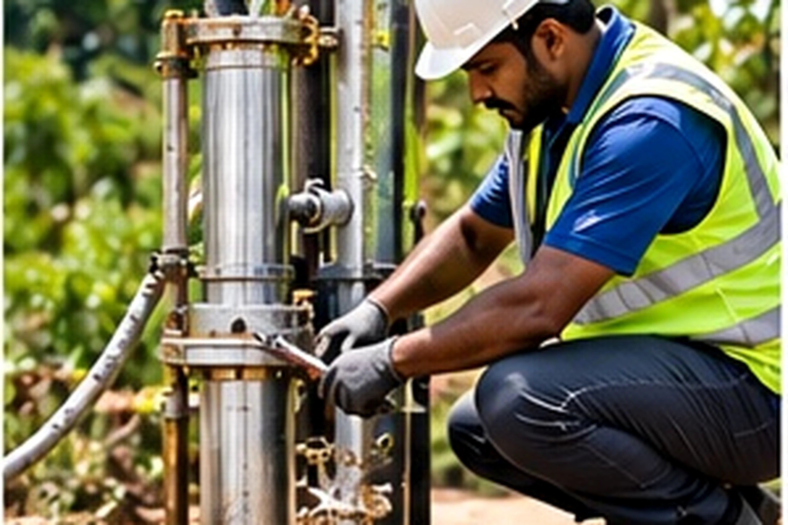
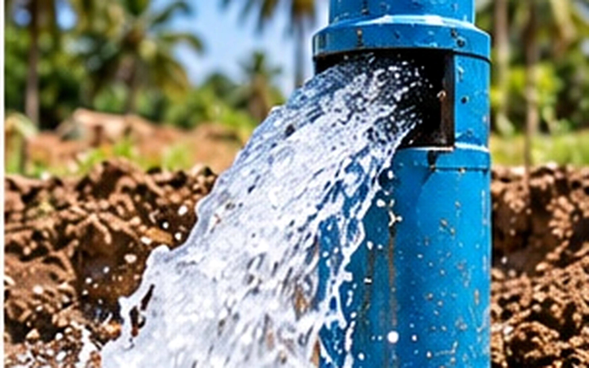
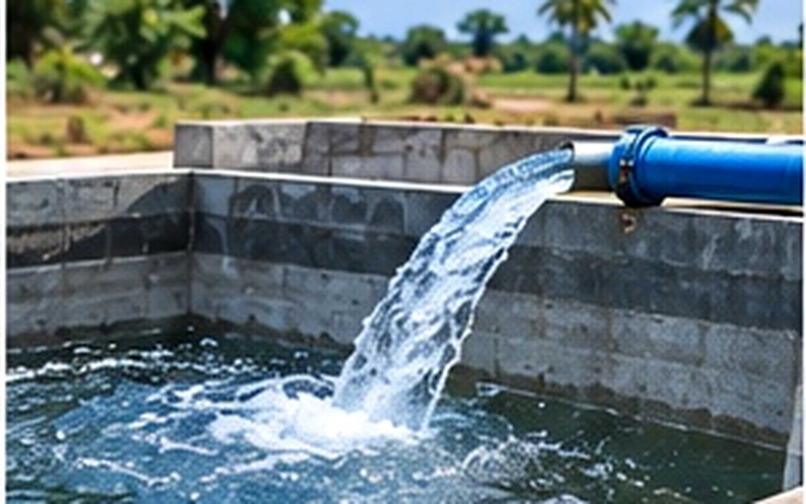

Cleaning service
Cleaning Methods in Chennai
Three cleaning methods — hand, Galaxy slow-rig and DTH power-rig — matched to your borewell's condition.
Overview
What we do
Not every borewell needs the same treatment. A lightly silted home bore and a deep, badly blocked industrial one call for different tools. We run three methods and choose the right one for your bore.
Hand (manual) cleaning for shallow, light work; Galaxy slow-rig for controlled mid-depth cleaning; and DTH power-rig for deep or stubborn blockages.

What's included
Every cleaning methods job covers
- Hand / manual method cleaning
- Galaxy slow-rig cleaning
- DTH power-rig cleaning
- Method matched to your bore
- Depth-appropriate equipment
- Yield check after every clean
When it's the right call
Best suited for
- Shallow home bores (hand method)
- Mid-depth controlled cleaning (Galaxy)
- Deep or badly blocked bores (DTH)
- Sites sensitive to vibration
- Bores where a previous clean failed
Questions
Frequently asked
Which cleaning method does my borewell need?
It depends on depth and how badly it's blocked. We inspect first, then recommend hand, Galaxy or DTH cleaning — you're never sold more machine than the job needs.
Is DTH cleaning safe for an old borewell?
On a sound casing, yes — DTH clears deep, stubborn blockages. If we're concerned about the casing's condition, we'll tell you and suggest a gentler method.
Related services
You might also need

Borewell Cleaning
Flushing that clears silt, mud, sand and yellow water to restore your yield.
Learn more →
Cleaning Process
A clear step-by-step process for cleaning both old and new borewells.
Learn more →Pipe Line Cleaning
Pipeline flushing that clears sand, rust, algae and scale for full flow.
Learn more →Need a borewell? Let's get you water.
Free site visit and a written, itemised quote across Chennai. Talk to a specialist today — no call-centre, no obligation.